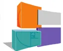

The logo of the Société Française d'Anesthésie et de Réanimation (SFAR) consists of three overlapping squares in orange, grey, and blue, arranged in a stylized, abstract shape.SFAR
Société Française d'Anesthésie et de Réanimation
Bulois P, Bazin JE, Lapuelle J, Al Nasser B, Chaussade S, Bonnet F, Robaszkiwicz M, Ecoffey C
au nom des conseils d'administration de la SFED (7 juillet 2016) et de la SFAR (validation 21 septembre 2016)
La coloscopie est la méthode de référence pour l'exploration du côlon. La préparation colique préalable à sa réalisation est un facteur essentiel de sa qualité. Les 2 indicateurs clés de qualité de la coloscopie que sont le taux d'intubation caecale et le taux de détection d'adénomes sont corrélés à l'efficacité de la préparation (1,2). La grande majorité des coloscopies est réalisée en France sous anesthésie générale (3). Une collaboration étroite entre anesthésistes et gastroentérologues est donc nécessaire dans la prescription de la préparation et de ses modalités afin d'obtenir une efficacité maximale dans des conditions de sécurité optimales.
Dans une méta-analyse regroupant 5 essais contrôlés randomisés utilisant le polyéthylène-glycol (PEG), la préparation fractionnée avec pause nocturne était supérieure à la prise de l'ensemble de la préparation en 2 doses la veille de l'examen en termes de tolérance globale, d'efficacité et d'observance (4). Dans un essai contrôlé randomisé utilisant le PEG ou une solution orale de phosphate de sodium (OPS), le taux de détection des lésions planes était supérieur en cas de prise fractionnée (5). Des données identiques étaient mises en évidence dans un essai utilisant les picosulfates de sodium (PICO) (6). Dans une étude de non infériorité comparant l'efficacité des trisulfates au PEG 2 litres avec acides ascorbique, les
taux de préparation satisfaisante étaient respectivement de 82,4 % vs 80,3% pour un schéma d'administration sur un jour et de 97,2 % vs 95,6% une administration fractionnée (7).
Une méta-analyse regroupant 47 essais contrôlés utilisant différents types de préparation montrait elle aussi une nette supériorité en termes de qualité et de tolérance pour la prise fractionnée avec pause nocturne (8). L'efficacité de la préparation fractionnée était meilleure dans toutes les situations testées : tout produit fractionné vs tout produit en prise la veille (32 essais, OR 2,51 95%CI 1,86-3,39), PEG fractionné vs PEG pris la veille (10 essais, OR 2,60 95%CI 1,46-4,63), OPS fractionné vs OPS pris la veille (4 essais, OR 9,34 95%CI 2,12-41,11) ou PEG forte dose fractionné vs PEG faible dose en prise la veille (6 essais, OR 1,89 95%CI 1,01-3,46). Dans cette méta-analyse, 14 essais avaient évalué la volonté des patients de reprendre le même type de préparation lors d'une future coloscopie : là aussi, les résultats étaient en faveur de la préparation fractionnée (OR 1,90 95%CI 1,05-3,46).
Lorsque la coloscopie est réalisée l'après-midi, l'administration de l'ensemble de la préparation le matin de l'examen peut être envisagée. Pour les PEG 4 litres, la prise de l'ensemble de la préparation le matin même améliore sa qualité et sa tolérance avec moins de perturbations du sommeil et de ballonnements (9,10). Pour le PEG 2 litres avec acide ascorbique, la prise de l'ensemble de la préparation le matin en améliore la tolérance mais pas l'efficacité (11). Pour les solutions OPS, une étude prospective de cohorte suggérait que la prise de l'ensemble de la préparation le matin en améliorait l'efficacité, diminuait ses effets indésirables et était préférée par les patients par rapport à une prise en deux doses la veille et le matin de l'examen (12).
Trois études prospectives regroupant au total 1546 patients ont mis en évidence que la qualité de la préparation était inversement corrélée avec le délai espaçant la dernière dose de préparation colique et l'examen (13,14,15). Les modalités d'administration et les solutés utilisés étaient différents dans ces 3 études. Dans l'une d'entre elles, on pouvait même estimer que chaque heure passée réduisait la probabilité d'obtenir une préparation satisfaisante de 10% (15). Un délai court entre la préparation et la coloscopie n'augmente pas le risque d'impériosité fécale durant le transport entre le domicile et l'unité d'endoscopie. Deux études
contrôlées randomisées avec au total 589 patients ne montraient d'augmentation du risque de ce type d'incident que la préparation soit prise entièrement la veille, entièrement le jour même ou en fractionné avec pause nocturne (5,16). Dans une étude contrôlée utilisant le PEG comme préparation, 3 facteurs ont été identifiés comme étant prédictifs de la qualité de la préparation colique : le suivi d'un régime sans résidu, l'ingestion de plus de 75% de la préparation et un délai entre la fin de la préparation et la réalisation de la coloscopie compris entre 3 et 5 heures. Au delà de 5 heures la qualité de la préparation mesurée par le score d'Ottawa se dégradait. Ce délai optimal de 3 à 5 heures entre la fin de la purge et le début de la coloscopie concernait tous les segments coliques (15).
Une des complications les plus redoutées par les anesthésistes-réanimateurs est l'inhalation du contenu gastrique, celle-ci serait de 0,14% au cours des coloscopies sous anesthésie générale (17). Il est maintenant clairement établi que les consignes de jeûne avant une induction anesthésique, chez des patients sans risque de retard de vidange gastrique doivent être de 2h pour les liquides clairs et de 6h pour les solides. L'attitude des anesthésistes-réanimateurs et des gastro-entérologues a souvent divergé quant au délai minimal séparant la dernière prise de préparation colique et l'induction anesthésique, essentiellement du fait que les anesthésistes considèrent préparation colique comme un liquide clair particulier, sa nature et par les volumes ingérés (18). L'estimation du résidu gastrique a été évaluée chez des patients bénéficiant d'une gastroscopie seule ou d'une coloscopie avec une préparation colique par PEG selon une procédure d'administration fractionnée ou non (19). Le volume gastrique résiduel était significativement plus bas en cas de gastroscopie seule (pas de préparation) (14,6 ml) mais n'était pas différent pour la coloscopie que la préparation soit fractionnée (19,7 ml) ou non (20,2 ml). Des résultats ont été plus récemment confirmés toujours avec du PEG avec un volume gastrique résiduel de 21 + 24 ml (0-125 ml) en cas d'apport fractionné dernière prise 2 à 3 h avant la coloscopie et 24 + 22 ml (0-135 ml) dans le groupe ayant reçu la préparation la veille (20). Il faut toutefois noter que dans cette étude, les volumes résiduels extrêmes sont de 0 à 135 ml deux heures après la dernière prise de PEG et de 0 à 50 ml chez les patients ayant un délai de 3h entre la dernière prise et la coloscopie. Avec le PICO et le citrate de magnésium, des résultats similaires ont été observés avec même une diminution significative du volume de résidu gastrique dans le groupe fractionné surtout si le jeûne était inférieur à 5h (21). Dans cette étude il n'existait pas de différence de pH gastrique entre les
deux groupes. Enfin par une validation échographique de l'évaluation de la surface antrale (22), Coriat et coll. ont démontré que l'estomac était vide deux heures après la prise de 4 comprimés de phosphate de sodium et de 750 ml de liquide clair (23). La préparation fractionnée ne semble donc pas augmenter le résidu gastrique des patients préparés pour une exploration endoscopique du colon. Les liquides de préparation colique se comportent comme des liquides clairs. Compte tenu du volume ingéré, un délai de 3h entre la dernière prise de préparation et la réalisation de l'induction anesthésique paraît répondre aux exigences de sécurité chez des patients ne présentant pas de retard à la vidange gastrique.
Il faut clairement différencier les patients ayant un risque de présenter un résidu gastrique important, de ceux présentant un risque d'inhalation du contenu gastrique par régurgitation en dehors d'un estomac plein. Il s'agit essentiellement des patients présentant un reflux gastro-oesophagien sévère, avec ou sans hernie hiatale, plus fréquent chez le patient obèse et la femme enceinte.
Le volume gastrique résiduel critique augmentant le risque de régurgitation passive se situe entre 25 et 200 ml (24,25). Dans un certain nombre de cas, la vidange gastrique peut être ralentie de façon variable y compris pour les liquides clairs. Plusieurs facteurs contribuent à ralentir la vidange gastrique (tableau I).
Tableau I : principales situations s'accompagnant d'un ralentissement de la vidange gastrique
|
|
Contrairement au tabagisme chronique le port de patch nicotinique ne modifie pas la vidange gastrique (26). L'abstention de la consommation de tabac dans les heures précédant l'anesthésie permet de limiter l'hypersécrétion gastrique. A noter que l'obésité et la grossesse
en dehors du travail n'altèrent pas la vidange gastrique (27). L'anxiété seule, ainsi que les médicaments anxiolytiques (benzodiazépines), n'auraient pas de retentissement sur la vidange gastrique (28).
Tous les laxatifs peuvent entraîner des désordres hydro-électrolytiques. Les purgatifs salins à base de phosphate de sodium peuvent s'accompagner d'une hyperosmolarité, d'hyponatrémie, d'hypernatrémie, d'hyperphosphatémie et d'hypokaliémie (29). L'hyponatrémie est rapportée à l'absorption excessive de fluide hypotonique pendant la préparation. Elle est principalement décrite chez l'insuffisant rénal et le vieillard et peut être responsable de crises convulsives (30).
L'hyperphosphatémie a été observée avec le phosphate de sodium en lien avec une réabsorption digestive de phosphate. Le risque est plus important en cas d'altération de la fonction rénale, chez le sujet âgé, en présence d'une cardiopathie et/ou d'une néphropathie, d'un diabète, de traitement comme les inhibiteurs de l'enzyme de conversion (IEC), les antagonistes des récepteurs à l'angiotensine II (ARA II), les diurétiques et les anti-inflammatoires non stéroïdiens. Elle peut donner lieu exceptionnellement à une néphropathie aiguë hyperphosphatémique. Le phosphate de sodium est contre-indiqué chez les sujets de moins de 18 ans et de plus de 65.
Le PEG induit peu de désordres hydroélectrolytiques. De rares cas de sécrétion inappropriée d'hormone antidiurétique ont été rapportés. La préparation à base de PEG a une meilleure tolérance que le phosphate de sodium en cas d'insuffisance rénale, d'insuffisance hépatique, d'insuffisance cardiaque congestive.
Certaines préparations coliques peuvent interagir avec les traitements des patients. Les préparations à base de PEG doivent être ingérées à au moins deux heures de distance de toute autre prise médicamenteuse. Avec les solutions de phosphate de sodium, il faut éviter tous les médicaments qui pourraient aggraver l'hypokaliémie (diurétiques de l'anse) ou exprimer une toxicité cardiaque à l'origine du déclenchement d'une torsade de pointe (digitaliques dont la toxicité cardiaque est favorisée par l'hypokaliémie). Chez les sujets de plus de 85 ans, des hypokaliémies et plus rarement des hyponatrémies ont été décrites après administration de
PEG. Dans cette population particulièrement à risque, un ionogramme sanguin peut être utile avant la coloscopie.
Une préparation colique optimale doit être efficace, acceptée et comprise par le patient et sans effet secondaire majeur. Les solutions de phosphate de sodium doivent être utilisées avec prudence chez les patients ayant un risque accru de troubles électrolytiques. L'horaire de prise et le fractionnement de la dose sont des critères importants de réussite de la préparation, quelle que soit la méthode utilisée. Un délai de 3h entre la dernière prise de préparation et l'induction anesthésique semble raisonnable pour garantir l'absence de risque d'inhalation chez les patients ne présentant pas de ralentissement de la vidange gastrique. Les autres liquides clairs peuvent être absorbés jusqu'à 2 heures avant l'anesthésie. L'horaire des dernières prises d'aliments solides, de préparation intestinale et de liquides clairs est synthétisé de manière pragmatique dans le tableau II. La communication entre les différents acteurs sur la stratégie de la préparation envisagée est un gage de sécurité pour le patient.
Tableau II : Synthèse des consignes concernant les dernières prises d'aliments, de liquides et de produit de préparation en fonction de l'horaire programmé de la coloscopie.
| Si l'examen a lieu entre : | Alimentation légère jusqu'à : | Préparation colique Jusqu'à : | Autres liquides clairs : eau, thé, café, tisane sucrés, jus de pomme ou de raisin, jusqu'à : |
|---|---|---|---|
| 8h - 10h | 2h | 5h | 6h |
| 10h – 12h | 4h | 7h | 8h |
| 12h – 14h | 6h | 9h | 10h |
| 14 – 16h | 8h | 11h | 12h |
| 16h- 18h | 10h | 13h | 14h |
colonoscopy : an easy tool following bowel preparation. World J Gastroenterol 2014 ; 20 : 13591-8.
24. Raidoo DM, Rocke DA, Brock-Utne JG, Marszalek A, Engelbrecht HE. Critical volume for pulmonary acid aspiration: reappraisal in a primate model. Br J Anaesth 1990;65:248-50.
25. Soreide E, Eriksson LI, Hirlekar G, Eriksson H, Henneberg SW, Sandin R, Raeder J. Pre-operative fasting guidelines: an update. Acta Anaesthesiol Scand 2005;49:1041-7.
26. Wong PW, Kadakia SC, McBiles M. Acute effect of nicotine patch on gastric emptying of liquid and solid contents in healthy subjects. Dig Dis Sci 1999;44:2165-71.
27. Wong CA, Loffredi M, Ganchiff JN, Zhao J, Wang Z, Avram MJ. Gastric emptying of water in term pregnancy. Anesthesiology 2002;96:1395-400.
28. Haavik PE, Soreide E, Hofstad B, Steen PA. Does preoperative anxiety influence gastric fluid volume and acidity? Anesth Analg 1992;75:91-4.
29. Hookey LC, Depew WT, Vanner S. The safety profile of oral sodium phosphate for colonic cleansing before colonoscopy in adults. Gastrointest. Endosc. 2002;56:895-902.
30. Dillon CE, Laher MS. The rapid development of hyponatraemia and seizures in an elderly patient following sodium picosulfate/magnesium citrate (Picolax). Age Ageing. 2009;38:487-90.